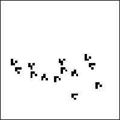

4. Cellular Automata and Fractal Evolution
The Game of Life
More amazingly, William Gosper and his group showed gliders can be aimed to collide and form a glider gun.

Click the picture to animate.
Return to
Life
.